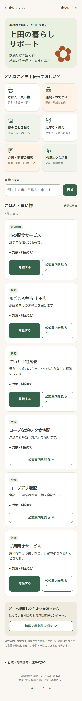

本人に合わせる
スマホが苦手でも、
家族から始められる。
本人が使う、本人と家族で使う、家族だけで使う。本人のスマホ操作を前提にせず、使い方を選べます。
家族だけで使う場合は、本人のスマホは不要。
家族のそばに、地域の支え。
うちの家族に合う、支え方がある。
離れていても、今日のひと声がつながる。
まずは、ふたりの画面を見てください。
ある朝の、まいにこ

朝の「おはよう」を押して記録します。

家族の画面で確認し、返事を送れます。
実際の画面部品を使った表示見本です。日時・記録は架空で、画像内のボタンは操作できません。通信による保存・読み込みが必要です。
写真つきの使い方を見る →WHY MAINICO
本人に合わせる
本人が使う、本人と家族で使う、家族だけで使う。本人のスマホ操作を前提にせず、使い方を選べます。
家族で支える
予定や日々の記録を家族で確認。本人と家族で使う場合は、挨拶や伝言でもつながれます。
地域の手を借りる
ごはん、通院、家のこと、介護の相談。上田のサービスや相談先を、困りごとから探せます。
困ったときは、地域の手を借りる

まずは、家族から。
あなたの家族に合う使い方を、
まいにこで見つけてみませんか。